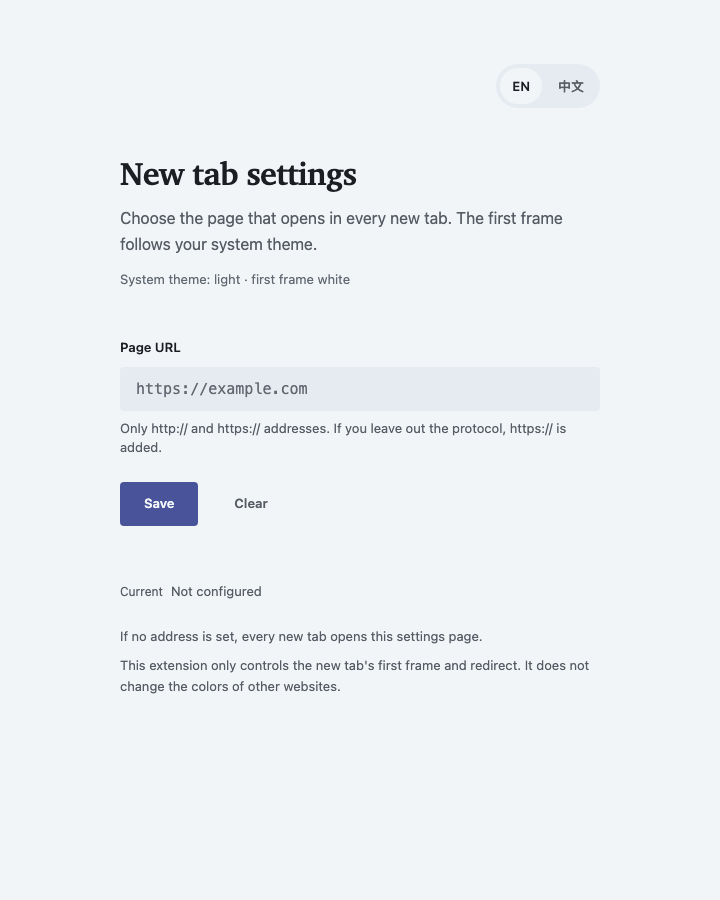
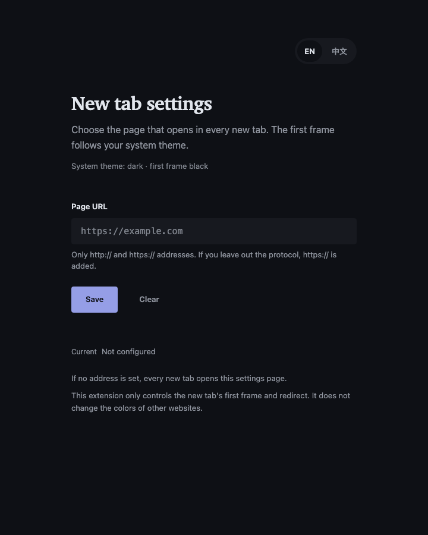

CHROME EXTENSION · MANIFEST V3
Custom
New Tab
One URL. One quiet new tab.
一个地址，一个安静的新标签页。
- Light / dark first frame
- English / 中文 settings
- storage permission only
github.com/ethanz-code/chrome-newtab-redirect


CHROME EXTENSION · MANIFEST V3
One URL. One quiet new tab.
一个地址，一个安静的新标签页。
github.com/ethanz-code/chrome-newtab-redirect

